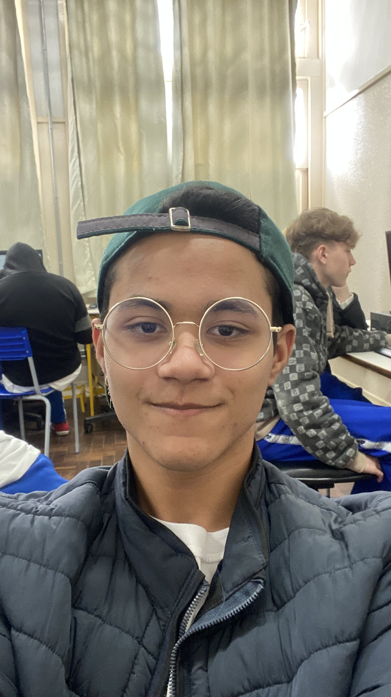
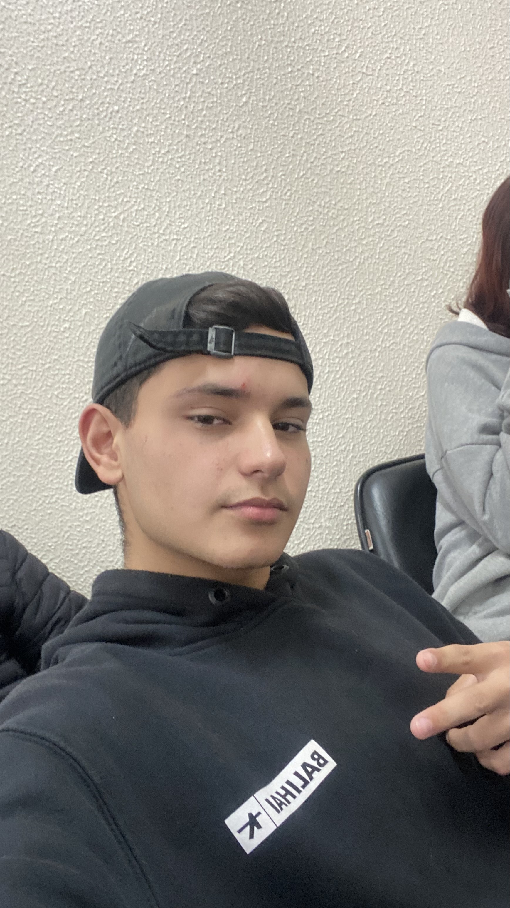
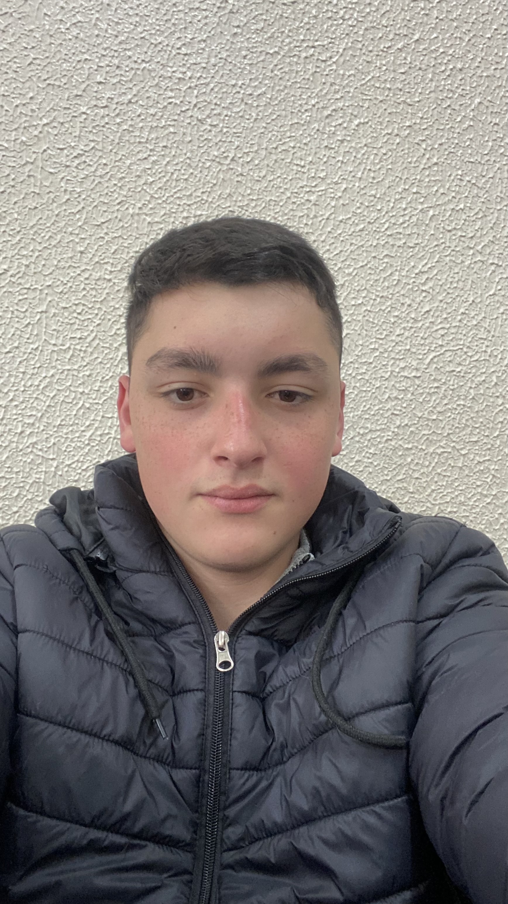
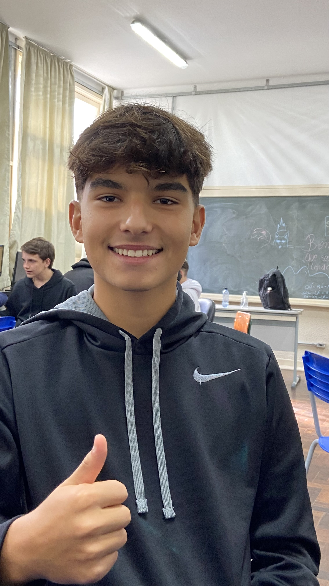

By: Gabryel H. Canedo da L.

Olá! Me chamo Gabryel. Sou de Curitiba, PR, e aluno do
Colégio Estadual do Paraná. Desejo cursar medicina no exterior ou na Universidade de São Paulo
após cuncluir o ensino médio
By: Flavio de Avejaneda M. F.

Me chamo Flavio, mais conhecido por meu sobrenome Mendes, e estudo no
Colégio Estadual do Paraná. Meu sonho é ser piloto de Fórmula 1 quando terminar o ensino médio
e for maior.
By: Matheus L. de Souza

Olá! Me chamo Matheus Loyola, sou de Curitiba, PR, e estudo no Colégio Estadual do
Paraná. Daqui a dois anos, após ter terminado o ensino médio, pretendo criar uma empresa de chinelos e
prosperar na área.
By: Felipe W. Nascimento

Olá! Sou dos Estados Unidos, me chamo Felipe, e vim ao Brasil com o proósito de jogar
futebol. Atualmente, estou em Curitiba, PR, e sou aluno do Colégio Estadual do Paraná.